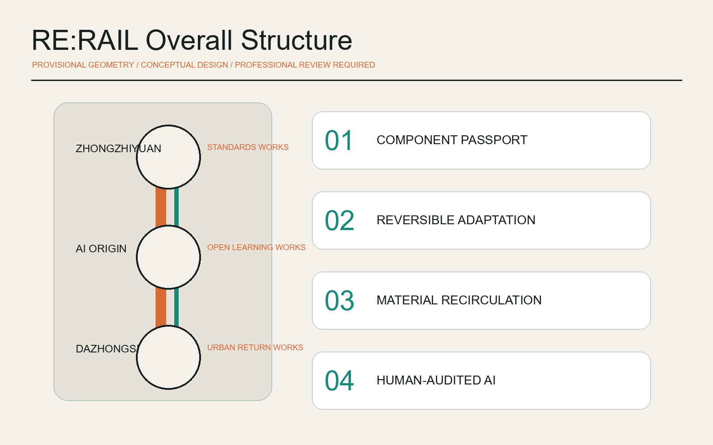
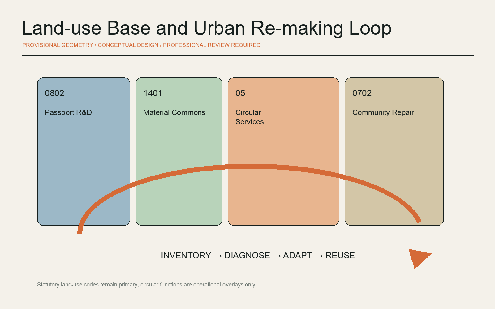
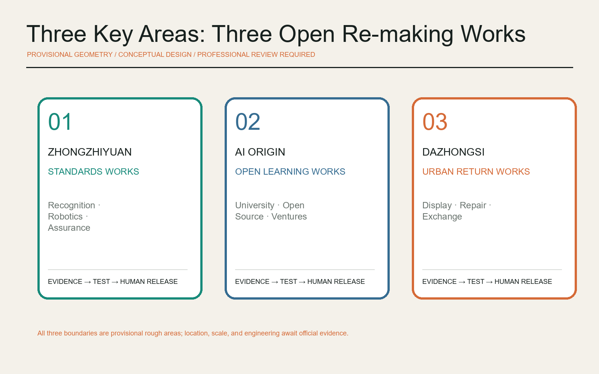
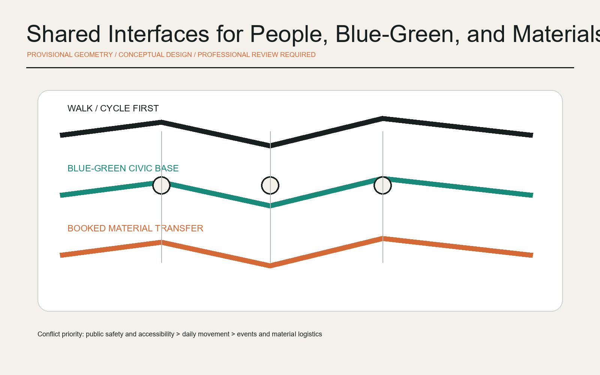
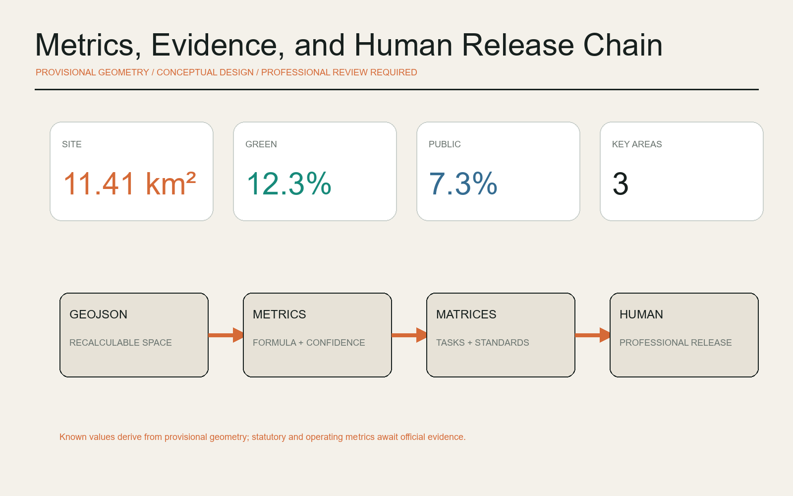

Overall structure

OPEN URBAN DESIGN / 2026
AI Circular Construction and Urban Renewal Commons
Provisional rough geometry for generation, display, and discussion only; not an official redline, precise area, or approval basis.





Diagnosis, passports, reversible joints, robotic disassembly, procurement, repair translation, accessibility, material library, shared tools, event return, cultural guide, and public review.
Evidence, licensed-professional, and public-interest gates. Failure at any gate pauses, narrows, or ends a trial.
Standards Works, Open Learning Works, and Urban Return Works supported by service and scenario wings.